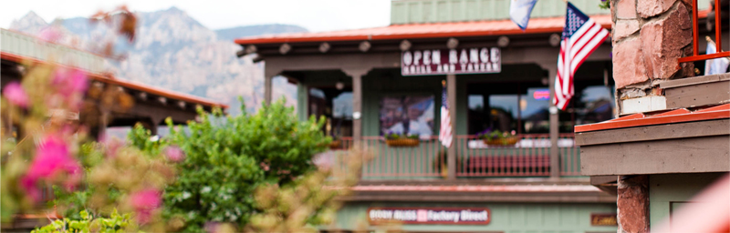
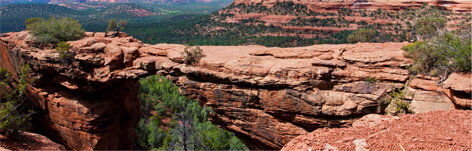

Город Седона ждет вас
Приветствие

Седона - небольшой городок в Аризоне, заслуживающий большего!
Рассмотрим 5 причин, по которым Седона круче, чем Гранд Каньон!
-
Настоящий городок
-№1-

Седона - не аттракцион для туристов, там течет своя жизнь -
Там есть мост дьявола
-№2-

Да, по нему можно пройти! Если конечно вы осмелитесь -
Небольшая площадь
-№3-
Все достопримечательности находятся очень близко -
Красивая дорога
-№4-
Ехать в Седону из Лас-Вегаса совсем не скучно -
Мало туристов
-№5-
Большинство едет в гранд каньон и толпится там
Все необходимое
-
Жильё
Рекомендуем пожить в настоящем мотеле, всё как в кино!
-
Еда
Всегда заказывайте фирменный бургер, вы не разочаруетесь!
-
Сувениры
Не только китайского, но и местного производства!
Заинтересовались?
Укажите предполагаемые даты поездки, и мы покажем вам лучшие предложения гостиниц в Седоне